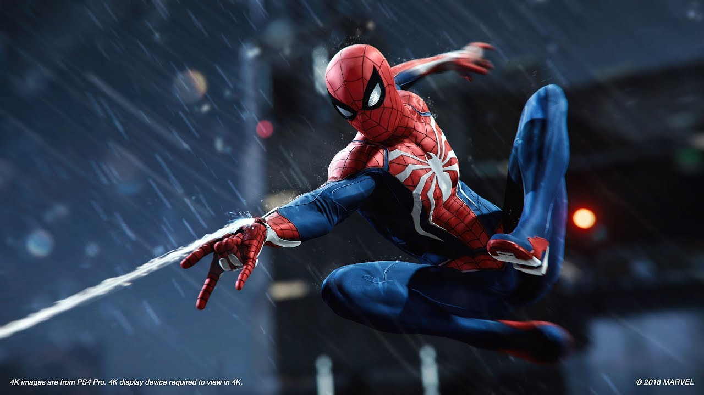

Spider-Man: No Way Home is a 2021 American superhero film based on the Marvel Comics character Spider-Man, co-produced by Columbia Pictures and Marvel Studios and distributed by Sony Pictures Releasing. It is the sequel to Spider-Man: Homecoming (2017) and Spider-Man: Far From Home (2019), and the 27th film in the Marvel Cinematic Universe (MCU). The film was directed by Jon Watts and written by Chris McKenna and Erik Sommers. It stars Tom Holland as Peter Parker / Spider-Man alongside Zendaya, Benedict Cumberbatch, Jacob Batalon, Jon Favreau, Jamie Foxx, Willem Dafoe, Alfred Molina, Benedict Wong, Tony Revolori, Marisa Tomei, Andrew Garfield, and Tobey Maguire. In the film, Parker asks Dr. Stephen Strange (Cumberbatch) to use magic to make his Spider-Man identity a secret again following its public revelation at the end of Far From Home. When the spell goes wrong, the multiverse is broken open which allows visitors from alternate realities to enter Parker's universe.

Tom Holland as Peter Parker / Spider-Man: A teenager and Avenger who received spider-like abilities after being bitten by a radioactive spider. The film explores the fallout of Spider-Man: Far From Home's (2019) mid-credits scene, in which Parker's identity as Spider-Man is exposed, and Parker is more pessimistic in contrast to previous Marvel Cinematic Universe (MCU) films. Holland said Parker feels defeated and insecure and was excited to explore the darker side of the character. The adjustment back to portraying Parker, including raising his voice pitch and returning to the mindset of a "naïve, charming teenager", was strange for Holland after taking on more mature roles such as in Cherry (2021).